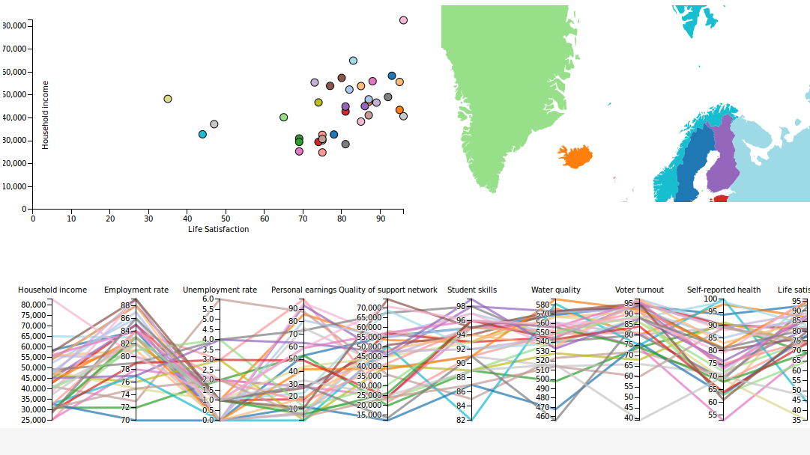
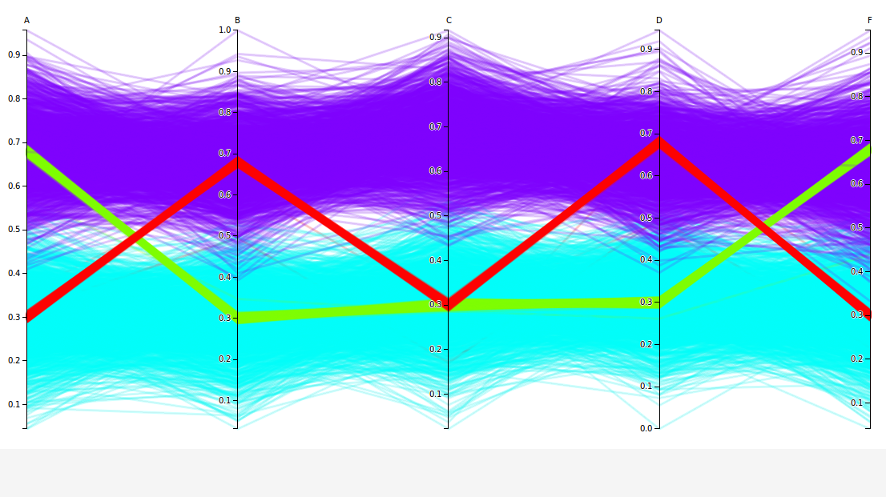
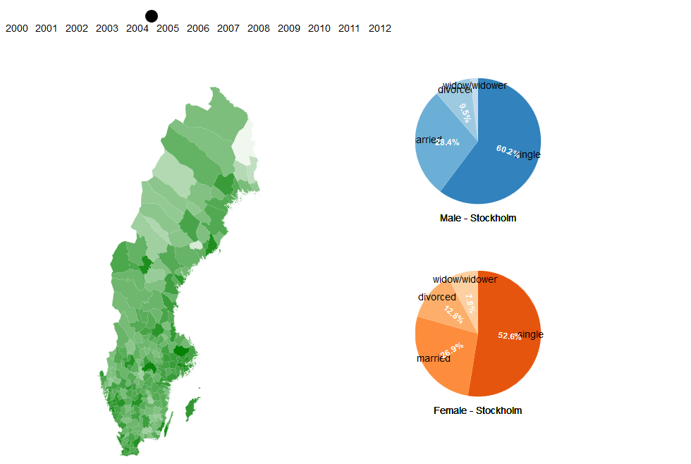

TNM048 - Information Visualization Labs, 2015
Niklas Fransson & Martin Kierkegaard
Lab1 - Choropleth map

Lab2 - Data mining and clustering

Project - Swedish population marritial status
Niklas Fransson, Anton Albèrt Karlström, Martin Kierkegaard
